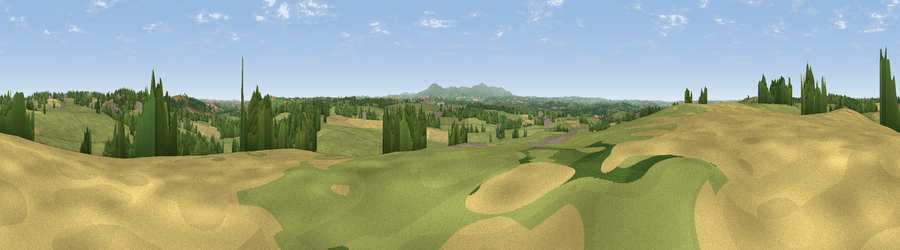

Viewpoint near Broadwoodkelly
#22630 in England · top 43% of its area beats it · near BroadwoodkellyWhere it is
The exact computed spot (SS 61975 07225). Click the marker for map links.
The view, rendered

A 360° render of this exact spot computed from the terrain model, tree cover and land cover — summer colours, afternoon light, calibrated against photographs of famous viewpoints. Real trees, hedges and buildings will differ in detail.
The panorama
Grey silhouette: terrain skyline in each direction (720 bearings, Earth curvature and refraction included). Dashed green: skyline with trees (+15 m) and buildings (+8 m) as obstacles. Blue strip: how far the ground is visible on each bearing.
Where the view opens
Wedge length = distance to the farthest visible ground on that bearing (vegetation-aware). Rings at 10, 25 and 50 km.
What fills the view
73% grassland · 13% cropland · 13% woodland · 1% built-up
Angular shares of the visible panorama (visual magnitude), not map area. Landscape diversity 0.36 (0–1 Shannon).
Key numbers
More beautiful places nearby
The staircase of upgrades: each row has a higher view potential than everything closer. Driving times are estimates from straight-line distance, calibrated against real road routing — check an actual route before setting out.
| Place | Direction | Drive | Score |
|---|---|---|---|
| Viewpoint near Broadwoodkelly | WNW · 1 km | ~2 min | 50.7 |
| Viewpoint near Iddesleigh | WNW · 3 km | ~8 min | 61.0 |
| Viewpoint near Bondleigh | ESE · 3 km | ~8 min | 64.0 |
| Viewpoint near Burrington | N · 11 km | ~21 min | 66.4 |
| Viewpoint near Sticklepath | S · 14 km | ~25 min | 73.5 |
| Viewpoint near South Zeal | S · 16 km | ~28 min | 75.0 |
| Yes Tor | SSW · 17 km | ~30 min | 78.5 |
| Codden Hill | N · 23 km | ~37 min | 81.3 |
50.84803, -3.96201 · source: screening · position refined by local search. Computed location — check access rights before visiting.